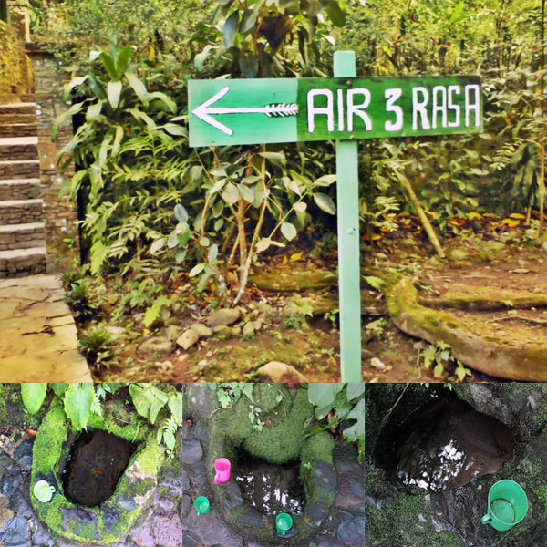

Air tiga rasa dari Sunan Muria

Pemandangan yang menarik memang menjadi salah satu daya tarik para wisatawan berkunjung ke tempat wisata Gunung Muria. Tak hanya itu, keberadaan Sunan Muria sebagai penyebar Islam di daerah tersebut telah menjadikan daerah yang terletak di perbatasan Kabupaten Kudus, Jepara dan Pati itu mempunyai banyak kisah dan peninggalan.
Salah satu peninggalan di masa Sunan Muria adalah tiga sumber mata air yang mempunyai rasa berbeda. Masyarakat setempat sering menyebutnya dengan Air Tiga Rasa.
Air Tiga Rasa terletak di dekat makam Syaikh Syadzali. Ia merupakan murid dari Sunan Muria yang berasal dari Baghdad. Ketika Syaikh Syadzali menghadap Sunan Muria untuk berguru, ia dianjurkan untuk pergi ke sebelah utara, tepatnya di daerah Rejenu, Dawe, Kudus.
Belakangan diketahui bahwa Syaikh Syadzali mempunyai banyak ilmu dan karomah hingga semakin banyak santri yang ingin berguru kepadanya. Salah satu karomah dari Syaikh Syadzali adalah Air Tiga Rasa yang letaknya tak jauh dari makam Syaikh Syadzali.
Menurut Budi Mulyanto (35), salah satu pengunjung Air Tiga Rasa di Rejenu Kudus, Jumat (24/7) kepercayaan yang berkembang di masyarakat setempat, air tersebut mempunyai khasiat yang berbeda.
Air pertama berkhasiat menjadi obat penyakit, air kedua berkhasiat menumbuhkan rasa percaya diri dalam menghadapi permasalahan hidup, dan air ketiga dipercaya berkhasiat dalam bidang rezeki.
"Memang rasanya berbeda-beda, ada rasa masamnya seperti minuman bersoda, tapi satu sama lain mempunyai tingkat kepekatan yang berbeda," kata Budi kepada brilio.net. Konon, ketika tiga air tersebut dicampurkan akan menghasilkan air tawar.
Sementara itu, Pitono (38), salah satu pengunjung lainnya yang datang dari Jepara mengatakan bahwa sejatinya air tiga rasa ini melatih kepekaan perasaan dari peminumnya. Rasa kehidupan yang dialami manusia berbeda-beda, ada rasa dendam, baik, dan lain sebagainya.
"Kalau yang ragu-ragu ya pasti rasanya sama. Tapi kalau mantap apalagi sudah dilatih, maka akan merasakan perbedaan dari ketiga mata air tersebut," terang Pitono yang sudah sering mendatangi makam Syaikh Syadzali ini.
Menurutnya, perbedaan dari ketiga air tersebut hanya bisa dirasakan sehingga tak bisa dideskripsikan dengan kata-kata. Begitu juga dengan khasiat atau barokah dari air itu sendiri yang menjadi rahasia dari Allah SWT.
Untuk menuju ke Air Tiga Rasa ini, aksesnya memang masih cukup jauh dan sulit. Letaknya sekitar 3 km dari taman parkir wisata Sunan Muria. Akses ke lokasi hanya bisa dilakukan dengan berjalan kaki atau mengendarai sepeda motor.
Kamu yang tak ingin jalan kaki bisa memanfaatkan jasa ojek yang ada di area parkir makam Sunan Muria. Jalan berkelok dan menanjak akan ditemui sepanjang perjalanan. Pemandangan yang indah dan udara yang dingin akan menambah sensasi yang berbeda.